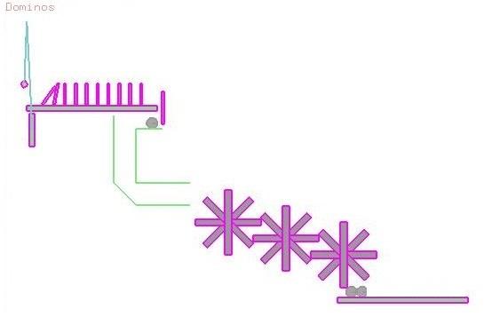
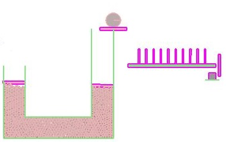
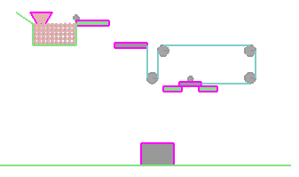

Cherry Placer
The motive of this project is to to accomplish a mundane task using a complex mechanism. In our machine we have developed a Rube Goldberg Machine
to compelete a cake by dropping a Cherry on the Cake. Its quite obvious that we dont need a machine for such a simple work
but thats the beauty of this project: To do the work in unconventional way.
We divided the code to be developed by each member. The following explains the work done by each member.
- Avinash: The pendulum intialization and the gear system is developed by Avinash, the sleepy head person who's morning neer starts before 12 in afternoon.
His hardwork can be seen in the perfect arrangement of the gears and high accuracy of the machine.

- Ashna: The hydraulic lift is developed by Ashna. Chatterbox of the team, she always keeps the energy of the team high. Her effort can be seen in the proper
working of the hydraulic lift which uses small balls instead of fluid and still works as a perfect machine.

- Suraj: The Google expert of the team, he always comes up with the solution when it seems impossible to others. LOL!! Yeah thats what he says :P. Suraj developed
one of the trcikiest part which was the fluid part. And as usual he did his part perfectly.
